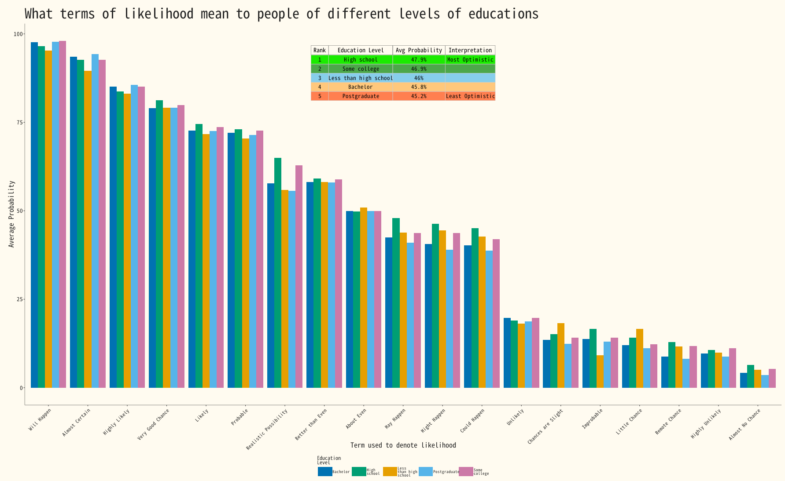

TidyTuesday (2026) Week 10: How likely is ‘likely’?
In an online quiz, created as an independent project by Adam Kucharski, over 5,000 participants compared pairs of probability phrases (e.g. “Which conveys a higher probability: Likely or Probable?”) and assigned numerical values (0–100%) to each of 19 phrases. The resulting data can be used to analyse how people interpret common probability phrases.
TidyTuesday
Data Visualization
R Programming
2026
Author
Peter Gray
Published
March 10, 2026

Grouped bar of Education level versus liklihood
1. R code
Show code
# | echo: true# | eval: false# | warning: false# | message: falseif(!(require(tidyverse))){install.packages("tidyverse"); library(tidyverse)}if(!(require(gridExtra))){install.packages("gridExtra"); library(gridExtra)}if(!(require(grid))){install.packages("grid"); library(grid)}if(!require(CustomGGPlot2Theme)){devtools::install("CustomGGPlot2Theme"); library(CustomGGPlot2Theme)}options(scipen=999)absolute_judgements<-readr::read_csv('https://raw.githubusercontent.com/rfordatascience/tidytuesday/main/data/2026/2026-03-10/absolute_judgements.csv')pairwise_comparisons<-readr::read_csv('https://raw.githubusercontent.com/rfordatascience/tidytuesday/main/data/2026/2026-03-10/pairwise_comparisons.csv')respondent_metadata<-readr::read_csv('https://raw.githubusercontent.com/rfordatascience/tidytuesday/main/data/2026/2026-03-10/respondent_metadata.csv')education<-respondent_metadata%>%select(response_id, education_level)df<-absolute_judgements%>%left_join(education, by ="response_id")%>%filter(!is.na(education_level))%>%group_by(term, education_level)%>%summarise(mean =mean(probability))%>%arrange(desc(mean))optimism_analysis<-df%>%group_by(education_level)%>%summarise(avg_probability =mean(mean), .groups ="drop")%>%arrange(desc(avg_probability))%>%mutate(rank =row_number(), interpretation =case_when(rank==1~"Most Optimistic",rank==n()~"Least Optimistic",TRUE~""))table_data<-optimism_analysis%>%mutate(avg_probability =paste0(round(avg_probability, 1), "%"))%>%select(Rank =rank, `Education Level` =education_level, `Avg Probability` =avg_probability, Interpretation =interpretation)term_order<-df%>%group_by(term)%>%summarise(overall_mean =mean(mean))%>%arrange(desc(overall_mean))%>%pull(term)df<-df%>%mutate(term =factor(term, levels =term_order))%>%arrange(term, desc(mean))# Plot settingscb_palette<-c("#0072B2", "#009E73", "#E69F00", "#56B4E9", "#CC79A7")plot<-ggplot(df, aes(fill=str_wrap(education_level, 10), y=mean, x=term))+geom_bar(position="dodge", stat="identity")+scale_fill_manual(values =cb_palette)+labs(y ="Average Probability", x ="Term used to denote likelihood", fill ="Education\nLevel", title ="What terms of likelihood mean to people of different levels of educations")+theme(axis.text.x =element_text(angle =45, hjust =1))+Custom_Style()+theme( panel.background =element_blank(), legend.position ="bottom", legend.title =element_text(size =9, face ="bold"), legend.text =element_text(size =8), plot.background =element_rect(fill ="#FFFBF0", color =NA))+guides(fill =guide_legend(nrow =1, byrow =TRUE))+theme( legend.key.width =unit(1.2, "cm"), legend.spacing.x =unit(1, "cm"), legend.spacing.y =unit(1, "cm"), legend.text =element_text(size =7, margin =margin(r =10, unit ="pt")))+guides(fill =guide_legend( nrow =1, byrow =TRUE, title.position ="top", label.position ="right"))n_rows<-nrow(table_data)color_palette<-colorRampPalette(c("#1E4D8B", "#6BA3D0", "#B8D4E8", "#E8F1F7"))(n_rows)grob_table<-tableGrob(table_data, rows =NULL, theme =ttheme_default( core =list( bg_params =list(fill =c("#1beb00ff", "#4da74aff", "#87CEEB", "#ffc87c", "#ff7f50")[1:n_rows], col ="grey80"), fg_params =list(cex =0.8, fontfamily ="noto_mono", col ="black")), colhead =list( bg_params =list(fill ="#FFFBF0", col ="grey40"), fg_params =list(cex =0.9, fontfamily ="noto_mono", fontface ="bold", col ="black"))))plot<-plot+annotation_custom( grob =grob_table, xmin =-Inf, xmax =Inf, ymin =75, ymax =Inf)+theme( plot.background =element_rect(fill ="#FFFBF0", color =NA), panel.background =element_blank(), plot.margin =margin(t =20, r =20, b =20, l =20))# print(plot)